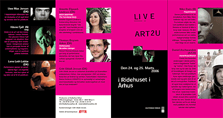

| dunst recommends this event: | 24. & 25. Marts 2006 |
|
 Festival LIVEART2U i Ridehuset i Århus. Produceres af Kulturhus Århus. Støttet af Kunststyrelsen. Kurator/arrangør: Gritt Uldall-Jessen. Intro: Festivalens forestillinger er inden for genren "live art". ”Live art” ligger som genre mellem installationskunst og performancekunst. Det kan beskrives som en form for scenekunst, der involverer performerens krop på en radikal måde. I "live art" overskrides grænsen mellem performeren som person og den fiktionskontrakt, som han/hun indgår i. Den sædvanlige konvention om, at scenekunstneren blot "lader som om", gælder ikke her. Publikum må selv finde ud af, hvornår det er et skuespil, og hvornår det er virkelighed. En ”live art”- kunstner kan fx bruge kroppen som en scene, og publikum kan inddrages eller lade sig inddrage som medspiller på forskellig måde. Program: Download som PDF med billeder Fredag d. 24 Marts 2006 Kl. 19.30 Åbning af festivalen Kl. 19.40 Performance ”frame!freeze!frame!”, del 1, af Daniel Aschwanden(Østrig/Schweiz) Kl. 20.00 Forestilling ”Puppetmaster” af Niko Raës(Belgien) Kl. 21.30-22.30 ”Performativ filosofisk dialog”, del 1, ved filosof Thomas Boysen Anker(DK) Lørdag d. 25 Marts 2006 Kl. 13.00 – 17.00 Performance ”frame!freeze!frame!”, del 2, ved Daniel Aschwanden(Østrig/Schweiz) Kl. 15.00 – 16.00 Forelæsning ”BODYMAPPING – The functional Body” af kunsthistoriker Annette Elgaard-Lindroos(DK) Kl. 19.00 - 22.00 ”Sting” Performance/installation af Håvve Fjell(Norge) Kl. 19.00 Performance af Lene Leth Lebbe(DK) Kl. 20.00 - 21.00 Performance af Uwe Max Jensen(DK) Kl. 21.30-22.30 Performativ filosofisk dialog, del 2, ved filosof Thomas Boysen Anker(DK) De deltagende kunstnerne er: Niko Raës (Belgien) med forestillingen "Puppetmaster". Denne performance er en installation, hvor Niko Räes befinder sig i en sort boks. Fra boksen udgår der reb, som publikum kan trække i. Rebene er fæstnet til Niko´s krop inde i boksen. På den måde kommer Niko under performancen ud i en række mulige/umulige fysiske stillinger. Denne "koreografi" kan man følge via en skærm. Daniel Aschwanden(Østrig) med forestillingen "frame!freeze!frame!". Daniel Aschwanden undersøger i denne performance begreberne "kulde og varme". Han fryser sin krop ned og tør den op. Dele af forestillingen vil foregå i en kølevogn. Her kan publikum fryse egne medbragte genstande ned og gøre disse genstande til en del af scenografien. Publikum vil også have mulighed for at opholde sig i kølevognen, der vil fungere som teaterscene. På denne scene vil en nyskreven teatertekst af en dramatiker blive sendt til Daniel via sms. Daniel vil opføre teksten ud fra en dialog med publikum om, hvordan teksten skal opføres. Uwe Max Jensen(DK). I denne happening vil han tilberede en blodpølse af sit eget blod og servere den for publikum Håvve Fjell (Norge). Installationen ”Sting” er en af i alt fem installationer i serien ”Kvintett”. (De øvrige fire levende skulpturer præsenteres som fotografier). Håvve Fjell placerer kroppen i en situation, hvor den er underlagt en eller flere restriktioner. Herigennem ønsker han at genspejle former af undertrykkelse og begrænsninger, som et samfund påfører individet. Lene Leth Lebbe(DK). Performeren danner en "amorf", kønnet figur i et organisk kostume, som hun spiser af og deler ud af til sit publikum. Forelæsere: Thomas Boysen Anker (DK). Filosof. Titel ”Performativ filosofisk dialog”. Thomas Boysen Anker vil lave et oplæg om performativ filosofi og rejse nogle filosofiske spørgsmål i relation til ”live art”. Annette Elgaard-Lindroos(DK). Mag. art. i kunsthistorie og kurator. Forelæsningen vil handle om installationskunst og en site specifik orientering i kunsten. Kurator: Gritt Uldall-Jessen(DK) er uddannet dramatiker på Dramatikeruddannelsen i Århus og arbejder som dramatiker og kurator. Hun har tidligere arrangeret en international ”live art”- festival og et seminar ”Live Art” i Kanonhallen i København. Denne festival ”LIVEART2U”er oprindeligt et samarbejde med Kanonhallen og fortsætter den teaterfaglige undersøgelse af, hvad ”live art” kan indebære? |
|
| Tilbage |